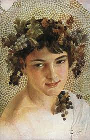
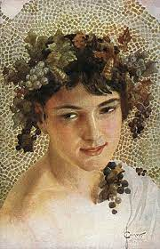

Діоніс
Діо́ніс (грец. Διώνυσος, Dionysos, Bakchos) — один із найпопулярніших богів Давньої Греції, бог
рослинності, родючості, вологи, покровитель виноградарства й виноробства. У переносному розумінні Діоніс
Бахус-Вакх — вино і пов'язані з ним веселощі.
В Евріпіда записано первісний грецький міф про народження Діоніса від фіванської царівни Семели й Зевса, який
відвідав її в образі смертного чоловіка. Перед народженням Діоніса ревнива Гера порадила Семелі попросити Зевса,
щоб він постав перед нею в усій своїй величі та блиску. Зевс виконав її прохання, але при цьому спалив свою
коханку блискавками. Проте він встиг урятувати недоношеного сина, якого зашив собі в стегно, а потім, коли
дитині надійшов час з'явитися на світ, віддав його на виховання німфам долини Ніси. Там, у лісових нетрях
молодий бог уперше знайшов виноградну лозу, тут же зав'язалася тісна дружба з лісовими божествами — силенами,
сатирами, німфами й кентаврами.
У низці інших античних авторів згадується доповнений варіант міфу. За наказом ревнивої Гери новонародженого
Діоніса схопили титани. Той, хоч умів перетворюватися на різних тварин, не зміг протистояти нападникам і ті
розірвали Діоніса на шматки. З пролитої при цьому крові виникло гранатове дерево, що має криваво-червоні плоди.
Останки юного бога вони зварили в казані, проте Рея склала їх докупи й оживила Діоніса. Зевс доручив доглядати
за ним Персефоні, котра віддала хлопчика цареві Афаманту, що сховав його у жіночій половині палацу,
перевдягнувши дівчинкою. Та Гера все ж відшукала Діоніса й помстилася Афаманту та його дружині Іно, наславши на
них божевілля. Цар убив свого сина Леарха, сприйнявши його за оленя.
За проханням Зевса Діоніса прихистили німфи гори Ніса. Гермес тимчасово перетворив Діоніса на ягня (чи козеня),
поки той не виріс. За догляд за сином Зевс винагородив німф, помістивши їх на небі як сім зір Гіад. На схилах
Ніси Діоніс винайшов виготовлення вина, чим найбільше відомий.
Гера визнала змужнілого Діоніса сином Зевса, але наслала на нього безумство. В супроводі Силена, сатирів і
менад Діоніс став вештатися по всьому світу. За зброю їм слугували обвиті плющем жезли, змії та трещітки, що
жахало зустрічних. Опинившись у Єгипті, Діоніс переконав місцевих цариць амазонок піти війною на титанів і
повернути відібране ними царство Аммона законному власнику. Похід вдався і це стало першою з перемог Діоніса,
попри прокляття Гери.
Дорогою до Індії Діоніс опинився біля міста Дамаск, де його не забажали прийняти. За це бог здер з дамаського
царя шкіру, з плюща й виноградної лози створив міст і, перетнувши річку Євфрат, вирушив далі. Через наступну
річку (Тигр) йому допоміг перебратися тигр, посланий Зевсом. До прибуття в Індію Діоніс покоряв місцеві народи,
засновував міста і навчав людей виноградарству[7]. Також він переслідував орди амазонок, які врятувалися тільки
в Ефесі, де відтоді жили їхні нащадки. Поле битви з амазонками, що не зуміли сховатися, отримало назву Пангема
— «криваве». З Індії Діоніс привів слонів, але частина їх померла на шляху до Європи, а їхні кістки лишилися на
місці як нагадування про подорож бога.
Коли Діоніс повернувся до Греції, у Фригії Рея (чи Кібела за іншими варіантами) очистила його від всіх скоєних
убивств і посвятила в свої містерії. Після цього Діоніс напав на Фракію, але отримав несподіваний опір царя
Лікурга. Той полонив усе його військо, а сам Діоніс утік, кинувшись у море, та сховався в гроті Фетіди. Рея
помстилася Лікургу, зробивши божевільним його самого. Той зарубав сокирою власного сина і розрубав тіло на
шматки. Через цей злочин вся фракійська земля стала безплідною. Діоніс оголосив, що земля стане родити тільки
після смерті царя. Піддані Лікурга відвели царя на гору Пангей, де його вбили дикі коні.
У Беотії Діоніса з його військом прихистив цар Пенфей, але обурився його поведінкою. Він наказав взяти бога в
полон, але втратиши глузд закував у ланцюги бика. Діоніс же з менадами вирішив далі. Коли Панфей кинувся
наздоганяти їх, сп'янілі менади розірвали його надвоє. Матір Пенфея Агава, збожеволівши, відірвала цареві
голову.
У Орхомені запрошення Діоніса приєднатися до нього відкинули три доньки царя Мінія. Почувши це, Діоніс
перетворився на лева, потім бика і пантеру, а доньки Мінія збожеволіли, побачивши це. Одна з них, Левкіппа,
вбила свого сина Гіппаса, після чого сестри з'їли його труп. Гермес перетворив їх на птахів, або, за іншими
переказами, Діоніс обернув сестер на кажанів[11]. Для спокути злочину відтоді в Орхмені щороку святкували
агріонії, коли обрані дівчата приходили до храму Діоніса, а жрець убивав першу з них, яку спіймає.
Чорнофігурна чаша «Діоніс у човні». Ексекія. Близько 530 р. до н. е. — Діоніс і перетворені на дельфінів пірати
Після того як вся Беотія дізналася про Діоніса і визнала його божественість, бог вина вирушив подорожувати
островами Егейського моря. В морі він потрапив до піратів, що замислили продати Діоніса в рабство, не знаючи
хто він. Діоніс зробив так, щоб з палуби виросли виноградні лози, весла перетворив на змій, а сам став левом.
Корабель наповнили привиди і зазвучали примарні флейти. Нажахані пірати викинулися за борт і стали дельфінами.
У Наксосі Діоніс зустрів покинуту Тесеєм Аріадну і одружився з нею. Вона народила Діонісу Енопіона, Фоанта,
Стафіла, Латроміду, Еванта і Тавропола. Пізніше Діоніс помістив весільний вінець Аріадни на небо серед зірок.
Одного разу від його почту відбився сатир Сілен, якого прийняв цар Мідас. У подяку за повернення сатира Діоніс
пообіцяв виконати будь-яке бажання царя. Жадібний до золота, Мідас захотів, щоб все, чого він торкнеться,
ставало золотом. Однак, на золото перетворювалися окрім іншого їжа і пиття, тож Мідасові стала загрожувати
голодна смерть. Він випросив у Діоніса забрати дар. Бог порадив омитися в річці Пактол. Мідас втратив свою
здатність, а пісок Пактола відтоді став золотоносним.
З Наксоса Діоніс вирушив до Аргосу, де Персей напав на його прибічників. В покарання за це бог зробив жінок
Аргосу божевільними і вони стали поїдати своїх дітей. Припинилося це лихо тільки тоді, коли Персей звів на
честь Діоніса храм. Тепер весь світ знав про Діоніса і він піднявся на Олімп та посів своє місце серед інших
богів.
 
